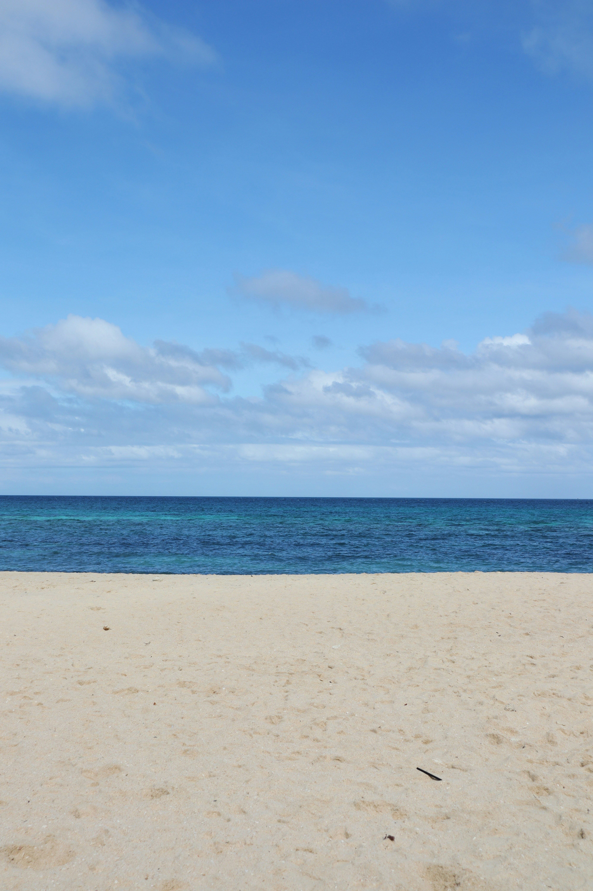

Carabao
Water buffalo are one of the most common animals, and some even view them as a national symbol. They roam along the many fields and farms in the country. The variety found in the Philippines is called carabao.
Lechon Kawali
Lechon Kawali, or deep fried pork belly, is a very common dish in the Philippines. It is often paired with a brown sauce called Mang Tomas.

Beaches
The Philippines is home to many, many beaches. After all, it is an island nation. Walking in any direction will soon land you on a nice, sandy beach and the locals are very used to hanging out there several times a week.
Fun facts!
- The Philippines has 7641 islands.
- There are over 170 dialects.
- It is the only Asian nation that is predominantly Christian.
- One famous street snack is called "balut", which is fertilised duck egg.
- One of the most popular transportation types is the jeepney.
- For more interesting facts, visit this blog site